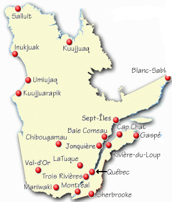

Kuujjuaq signifie « grande rivière ». Le village se trouve sur la rive ouest de la rivière Koksoak, à environ 50 km en amont de la baie d’Ungava.Le fichier Kuujjuaq.dat contient les températures mensuelles moyennes de juillet 1947 à 2006. Il s'agit de comparer des valeurs individuelles à la tendance des moyennes pendant cette période.
Utiliser les méthodes traditionnelle et vectorielle.
Solution : VectoKuujjuaq.m